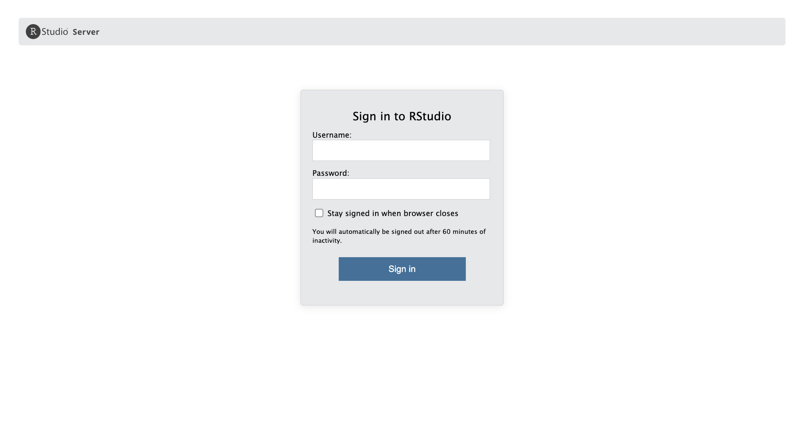

ORA with R
Objectives
- Generate the inputs for over-representation analysis (ORA) in WebGestaltR from a differential expression analysis.
- Use WebGestaltR to do an ORA analysis.
- Understand how to interpret the results of ORA analysis.
Getting started
As we have seen with the web interface for WebGestalt, an over-representation analysis on differential expression results requires:
- An input list of differentially expressed - subject to
cutoffs for significance - that will be queried.
- A reference/background gene set of genes that are expected to have be measured in the experiment
- The functional/biological knowledge database which defines the gene sets that will be used to test for over-representation.
In addition to the browser version of WebGestalt, the
authors also created an R package called
WebGestaltR that can be used to run the tool in R
instead of by using their webserver. This allows us to run functional
enrichments in a more reproducible manner since we can record the exact
inputs and parameters used.
Orienting on RStudio
To get started, let’s log in to the workshop server by going
here: https://bfx-workshop02.med.umich.edu
The login page for the server looks like:

Enter your user credentials and click Sign In. The RStudio interface should load and look something like:

Checkpoint - after you’ve logged in put up a green check; if you need help put up a red check and post in slack.
RStudio is an integrated development environment where you can write, execute, and see the results of your code. The interface is arranged in different panes:
- The Console pane along the left where you can enter commands and execute them.
- The Environment pane in the upper right shows any variables you have created, along with their values.
- The pane in the lower right has a few functions:
- The Files tab let’s you navigate the file system.
- The Plots tab displays any plots from code run in the Console.
- The Help tab displays the documentation of functions.
Commands in the Script
When first opening RStudio, a script file is not automatically opened. We’ll create our script file to record our analysis and make it more reproducible by clicking on the icon in the upper-left of the interface (a blank piece of paper with a + sign), and selecting R Script.

The new pane that opens is the Source pane:

Notice that if we press Enter in the Source pane, we get a new line instead of running the code.
In order to execute code, we press Ctrl + Enter either on the single line we want to run, or on a highlighted block of code. For example if we type in the script file:
3+2We then see that code executed, along with its result in in the Console pane.

Summary: Console vs Script
Here are some of the key differences between the Console and Script panes in RStudio:
| Console | Script |
|---|---|
| Ephemeral code | Preserved code |
| Run with Enter | Run with Ctrl + Enter |
| Hard to share | Easy to share |
Configuring RStudio
All of the panes in RStudio have configuration options. For example, you can minimize/maximize a pane or resize panes by dragging the borders. The most important customization options for pane layout are in the View menu. Other options such as font sizes, colors/themes, and more are in the Tools menu under Global Options.
We can enable soft-wrapping of code by selecting Code and then Soft Wrap Long Lines.

Workshop flow
To accomodate learning styles and to keep us moving along, we’ll provide code in three different ways, and you can get that code into RStudio in corresponding ways:
| Source of Code | Execution of Code |
|---|---|
| Zoom screen share | Type the code yourself. |
| Slack | Copy and paste code into RStudio. |
| Website | Use code block copy button and paste into RStudio. |
Questions?
Setting up
Before we begin, the folder structure of a working directory / project organizes all the relevant files. Typically we make directories for the following types of files:
- Raw data, called
data,input, etc, - Results, often
resultsoroutputwith subfolders fortables,figures, andrdata, and - Scripts, often
scripts.
We’ve already provided the raw data in the inputs/
folder, but you’d otherwise want to move the starting, unaltered, data
into this folder.
Creating directory stucture
Before we start creating directories, let’s make sure we’re in the right location. To print the current working directory:
# =========================================================================
# Day 1 - Getting Started with Functional enrichment
# =========================================================================
# -------------------------------------------------------------------------
# Get current working directory
getwd()This means that any references to files loaded or files saved is with respect to this location. This can simplify our code a bit by allowing us to use relative paths rather than full paths. Let’s set our working directory to the ISC folder in our respective home directories.
# -------------------------------------------------------------------------
# Set current working directory
setwd('~/IFUN_R')Now that we’re sure of our working directory, let’s create some folders for our analysis scripts and results thereof.
# -------------------------------------------------------------------------
# Create directory structure
dir.create('scripts', recursive = TRUE, showWarnings = FALSE)
dir.create('results/figures', recursive = TRUE, showWarnings = FALSE)
dir.create('results/tables', recursive = TRUE, showWarnings = FALSE)
dir.create('results/rdata', recursive = TRUE, showWarnings = FALSE)Saving scripts
Let’s save our currently open script in the scripts/
folder as IFUN_day1.R by clicking File and then
Save.
Using WebGestaltR
To start, we’ll load the WebGestaltR library along with
tidyverse, which we’ll use for data processing and
visualization. Both packages were both pre-installed on the workshop
server but later in the workshop we’ll discuss how to use these packages
on other compute resources like GreatLakes.
# =========================================================================
# ORA with WebGestlatR
# =========================================================================
# -------------------------------------------------------------------------
# Load the libraries
library(WebGestaltR)******************************************* ** Welcome to WebGestaltR ! ** *******************************************library(tidyverse)── Attaching core tidyverse packages ───────────────────────────── tidyverse 2.0.0 ──
✔ dplyr 1.1.4 ✔ readr 2.1.5
✔ forcats 1.0.0 ✔ stringr 1.5.1
✔ ggplot2 3.5.2 ✔ tibble 3.2.1
✔ lubridate 1.9.4 ✔ tidyr 1.3.1
✔ purrr 1.0.4 ── Conflicts ─────────────────────────────────────────────── tidyverse_conflicts() ──
✖ dplyr::filter() masks stats::filter()
✖ dplyr::lag() masks stats::lag()
ℹ Use the conflicted package (<http://conflicted.r-lib.org/>) to force all conflicts to become errorsNote - when loading tidyverse you will likely
see some red text. Remember that this is an informative message about
the package loading and functions that share names between multiple
source packages, not a warning or error.
Let’s look at the documentation for the main function in WebGestaltR to understand how to input these required objects into the function. Think of it as reading the recipe before you start cooking.
# -------------------------------------------------------------------------
# Look at the manual for the main function
?WebGestaltRThere are a lot of arguments that go into this function, but, like many other R functions, we won’t need or use all of them. Let’s focus on the arguments we’ll be using, while noting some of the defaults.
enrichMethodis the method used for the functional enrichment. We will use'ORA'for this part of the workshop.organismis the organism used for the experiment. The selection helps WebGestaltR extract the correct genes for the correct gene sets.enrichDatabaseare the functional/biological knowledge database with the genesets and pathways that will be compared to the input data
We can use the listOrganism() function to see all
available organisms available for the package, and,
importantly, how they’re labeled. We can expect that the organism ID
will need to be matched exactly in both spelling and case when
specifying that argument.
# -------------------------------------------------------------------------
# List available organisms
listOrganism() [1] "athaliana" "btaurus" "celegans" "cfamiliaris" "drerio"
[6] "sscrofa" "dmelanogaster" "ggallus" "hsapiens" "mmusculus"
[11] "rnorvegicus" "scerevisiae" To see what functional databases are available from the tool, we can
see the listGeneSet() function to see the available
genesets for specific organisms. For this function, we need to specify
mmusculus as the organism to have the appropriate
references listed.
# -------------------------------------------------------------------------
# List available reference genesets for mmusculus
listGeneSet(organism = 'mmusculus') %>% head(10) name
1 geneontology_Biological_Process
2 geneontology_Biological_Process_noRedundant
3 geneontology_Cellular_Component
4 geneontology_Cellular_Component_noRedundant
5 geneontology_Molecular_Function
6 geneontology_Molecular_Function_noRedundant
7 pathway_KEGG
8 pathway_Panther
9 pathway_Reactome
10 pathway_Wikipathway
description
1 The gene ontology biological process database was downloaded from http://www.geneontology.org/.
2 The gene ontology biological process database was downloaded from http://www.geneontology.org/. Then, we only contain the non-redundant categories by selecting the most general categories in each branch of the GO DAG structure from all categories with the number of annotated genes from 20 to 500.
3 The gene ontology cellular component database was downloaded from http://www.geneontology.org/.
4 The gene ontology cellular component database was downloaded from http://www.geneontology.org/. Then, we only contain the non-redundant categories by selecting the most general categories in each branch of the GO DAG structure from all categories with the number of annotated genes from 20 to 500.
5 The gene ontology molecular function database was downloaded from http://www.geneontology.org/.
6 The gene ontology molecular function database was downloaded from http://www.geneontology.org/. Then, we only contain the non-redundant categories by selecting the most general categories in each branch of the GO DAG structure from all categories with the number of annotated genes from 20 to 500.
7 The KEGG pathway database was downloaded from http://www.kegg.jp/.
8 The PANTHER pathway database was downloaded from http://www.pantherdb.org/pathway/.
9 The Reactome pathway database was downloaded from http://www.reactome.org/.
10 The Wikipathway database was downloaded from http://www.wikipathway.org/.
idType
1 entrezgene
2 entrezgene
3 entrezgene
4 entrezgene
5 entrezgene
6 entrezgene
7 entrezgene
8 entrezgene
9 entrezgene
10 entrezgeneHere we should see some familar options, including
geneontology_Biological_Process_noRedundant.
Continuing with the arguments for the WebGestaltR()
function:
interestGenefor ORA this should be a vector of gene identifiers for a set of differentially expressed “interest” genes.interestGeneTypeis the type of identifier used to describe the genes.
We can use the listIdType() function to see which
identifiers are available for which organisms, adding on a
tail() to look at a subset. We will be using the
'genesymbol' type, but note the presence of
'ensemble_gene_id' and 'entrezgene', among
other common (and not-so-common) identifiers.
# -------------------------------------------------------------------------
# List gene identifier types for mmusculus
listIdType(organism = 'mmusculus') %>% tail(25) [1] "dbSNP" "embl"
[3] "ensembl_gene_id" "ensembl_peptide_id"
[5] "entrezgene" "entrezgene_protein-coding"
[7] "genename" "genesymbol"
[9] "illumina_ScriptSeq_RNASeqV2" "illumina_WG6_Customarray"
[11] "illumina_mouseref_8" "illumina_mouseref_8_v2"
[13] "illumina_mousewg_6_v1" "illumina_mousewg_6_v2"
[15] "interpro" "phalanx_onearray"
[17] "phosphositeEnsembl" "phosphositeRefseq"
[19] "phosphositeSeq" "phosphositeUniprot"
[21] "protein_id" "refseq_mrna"
[23] "refseq_peptide" "unigene"
[25] "uniprotswissprot" Continuing with the arguments for the function:
referenceGeneis also a vector of gene identifiers, but this is the background set of genes. Unlike the browser option, here will use all the genes tested for differential expression in the DE analysis, noting that this itself implies some prior filtering.referenceGeneTypeis again the type of identifier used, but to describe the reference set.fdrThrrefers to the significance threshold for thefdrmethod (by default the Benjamini-Hochberg FDR correction). The default isfdrThre = 0.05, but you may want to relax this threshold to see what genesets are “close” to significance, depending on the limitations of the DE results and downstream goals.outputDirectoryandprojectNameare used to specify where to put results and what to call them. By default,WebGestaltR()has rich output in the form of supporting files, but also an HTML report (just like the web-version) that summarizes the results and provides helpful visualizations.
We can think of the above arguments as the minimum necessary for an over-representation analysis. Now let’s read in the differential expression results, and create the right inputs for the ORA.
Read in diffex results
For our first ORA, we will use the differential expression results from the same bulk RNA-seq data we used in the browser-based analysis from the RNA-seq Demystified workshop (link).
We have provided these differential results as a CSV file, which we
can read in with the read_csv() function:
# -------------------------------------------------------------------------
# Read diffex results
rsd_diffex = read_csv('inputs/bulk_de_results/de_deficient_vs_control_annotated.csv')Rows: 16249 Columns: 9
── Column specification ─────────────────────────────────────────────────────────────
Delimiter: ","
chr (3): id, symbol, call
dbl (6): baseMean, log2FoldChange, lfcSE, stat, pvalue, padj
ℹ Use `spec()` to retrieve the full column specification for this data.
ℹ Specify the column types or set `show_col_types = FALSE` to quiet this message.As always, it’s helpful to look at the result of what we read in to get a sense for how to work with it:
# -------------------------------------------------------------------------
head(rsd_diffex)# A tibble: 6 × 9
id symbol baseMean log2FoldChange lfcSE stat pvalue padj call
<chr> <chr> <dbl> <dbl> <dbl> <dbl> <dbl> <dbl> <chr>
1 ENSMUSG00000000001 Gnai3 1490. 0.278 0.148 1.88 0.0605 0.325 NS
2 ENSMUSG00000000028 Cdc45 1749. 0.222 0.129 1.72 0.0853 0.386 NS
3 ENSMUSG00000000031 H19 2152. 0.136 0.284 0.478 0.633 0.867 NS
4 ENSMUSG00000000037 Scml2 24.9 0.600 0.562 1.07 0.286 NA NS
5 ENSMUSG00000000049 Apoh 7.78 -1.23 1.15 -1.07 0.285 NA NS
6 ENSMUSG00000000056 Narf 19654. -0.201 0.167 -1.20 0.229 0.596 NS Extracting genes for ORA
We can see some of the typical output from DESeq2, including a gene
identifier (or two), overall expression, log fold-change, p-value, and
adjusted p-value (FDR). As we saw in the documentation for
WebGestaltR(), we’ll need two lists of gene
identifiers:
interestGene: The gene identifiers representing the DE genes, andreferenceGene: The gene identifiers representing a background set of genes, ideally all genes tested in the DE analysis.
For simplicity, and slightly easier interpretability, let’s use the gene symbol column. It’s always a good idea to see how many identifiers are NA, and remove them because they can’t be used in the analysis anyhow.
# -------------------------------------------------------------------------
# How many symbols are NA?
table(is.na(rsd_diffex$symbol))
FALSE TRUE
16114 135 # -------------------------------------------------------------------------
# Filter out the NAs
rsd_diffex = rsd_diffex %>% dplyr::filter(!is.na(symbol))
# Verify we have fewer by noting dimension of resulting table
rsd_diffex# A tibble: 16,114 × 9
id symbol baseMean log2FoldChange lfcSE stat pvalue padj call
<chr> <chr> <dbl> <dbl> <dbl> <dbl> <dbl> <dbl> <chr>
1 ENSMUSG00000000001 Gnai3 1490. 0.278 0.148 1.88 0.0605 0.325 NS
2 ENSMUSG00000000028 Cdc45 1749. 0.222 0.129 1.72 0.0853 0.386 NS
3 ENSMUSG00000000031 H19 2152. 0.136 0.284 0.478 0.633 0.867 NS
4 ENSMUSG00000000037 Scml2 24.9 0.600 0.562 1.07 0.286 NA NS
5 ENSMUSG00000000049 Apoh 7.78 -1.23 1.15 -1.07 0.285 NA NS
6 ENSMUSG00000000056 Narf 19654. -0.201 0.167 -1.20 0.229 0.596 NS
7 ENSMUSG00000000078 Klf6 951. -0.131 0.166 -0.788 0.430 0.752 NS
8 ENSMUSG00000000085 Scmh1 727. 0.232 0.186 1.25 0.212 0.577 NS
9 ENSMUSG00000000088 Cox5a 1427. -0.264 0.205 -1.29 0.198 0.556 NS
10 ENSMUSG00000000093 Tbx2 15.2 0.548 0.663 0.826 0.409 NA NS
# ℹ 16,104 more rowsLet’s start with the reference set because it doesn’t require any filtering:
# -------------------------------------------------------------------------
# Pull all genes tested
rsd_ref_ora = rsd_diffex %>% pull(symbol)
# -------------------------------------------------------------------------
# Preview the vector
head(rsd_ref_ora)[1] "Gnai3" "Cdc45" "H19" "Scml2" "Apoh" "Narf" # -------------------------------------------------------------------------
# How big is the custom background?
length(rsd_ref_ora)[1] 16114Next, let’s extract the significantly differentially expressed genes. We’ll use the same thresholds used to call DE genes in the original analysis - a “typical” significance threshold of FDR < 0.05 and |log2FC| > log2(1.5).
# -------------------------------------------------------------------------
# Pull diffex genes
rsd_sig_ora = rsd_diffex %>%
dplyr::filter(padj < 0.05 & abs(log2FoldChange) > log2(1.5)) %>%
pull(symbol)
# -------------------------------------------------------------------------
# Preview the vector
head(rsd_sig_ora)[1] "Trim25" "Bcl11a" "Itgb7" "Ddb2" "Apoe" "Gys1" # -------------------------------------------------------------------------
# How many significant genes are there?
length(rsd_sig_ora)[1] 189Write out gene lists to file
We can write out the list of DE interest genes to file re-create the input file we uploaded for the browser-based WebGestalt analysis as well as output to file the custom reference/background gene list.
# -------------------------------------------------------------------------
# Write out list of DE interest genes to file
write_lines(rsd_sig_ora, file="./results/tables/deficient_DE_GeneList.txt")
# -------------------------------------------------------------------------
# Write out custom reference/background set of genes to file
write_lines(rsd_ref_ora, file="./results/tables/deficient_reference_GeneList.txt")To download these tables, we can use the file viewer tab to navigate
to the tables subdirectory within our results
directory, select the two files, and then use the blue Gear
symbol on the top right of the pane to select Export. After
re-naming the export tables-export.zip and selecting
Download, the files should be in a zipped folder in the
downloads folder on your computer.

Running ORA
We now have an understanding of the important parameters and vectors of genes prepared to follow through with the over-representation analysis. For demonstrative purposes we will start with the same non-redundant version of the Gene Ontology Biological Process genesets used in the web version but relax our significance threshold.
# -------------------------------------------------------------------------
# ORA on bulk RNA-seq DESeq2 results with GO - Biological Process knowledge base
rsd_ora_result = WebGestaltR(
enrichMethod = 'ORA',
organism = 'mmusculus',
enrichDatabase = c('geneontology_Biological_Process_noRedundant'),
interestGene = rsd_sig_ora,
referenceGene = rsd_ref_ora,
interestGeneType = 'genesymbol',
referenceGeneType = 'genesymbol',
fdrThr = 0.1,
outputDirectory = './results',
projectName = 'deficient_vs_control_ORA-GO_BP')Loading the functional categories...
Loading the ID list...
Loading the reference list...Warning in dir.create(projectDir):
'./results/Project_deficient_vs_control_ORA_GO_BP' already existsSummarizing the input ID list by GO Slim data...Performing the enrichment analysis...
Begin affinity propagation...
End affinity propagation...
Begin weighted set cover...
Remain is 0, ending weighted set cover
Generate the final report...
Results can be found in the ./results/Project_deficient_vs_control_ORA_GO_BP!# -------------------------------------------------------------------------
# View the first few results
head(rsd_ora_result) geneSet description
1 GO:0070997 neuron death
2 GO:0098754 detoxification
3 GO:0062012 regulation of small molecule metabolic process
4 GO:0006575 cellular modified amino acid metabolic process
5 GO:0097193 intrinsic apoptotic signaling pathway
6 GO:0043620 regulation of DNA-templated transcription in response to stress
link size overlap expect
1 http://amigo.geneontology.org/amigo/term/GO:0070997 263 14 3.7281697
2 http://amigo.geneontology.org/amigo/term/GO:0098754 77 7 1.0915174
3 http://amigo.geneontology.org/amigo/term/GO:0062012 235 12 3.3312543
4 http://amigo.geneontology.org/amigo/term/GO:0006575 120 8 1.7010660
5 http://amigo.geneontology.org/amigo/term/GO:0097193 227 11 3.2178499
6 http://amigo.geneontology.org/amigo/term/GO:0043620 50 5 0.7087775
enrichmentRatio pValue FDR
1 3.755194 1.979515e-05 0.01565796
2 6.413091 1.026862e-04 0.03144459
3 3.602247 1.192589e-04 0.03144459
4 4.702933 2.905229e-04 0.05745090
5 3.418432 3.635356e-04 0.05751133
6 7.054400 6.718740e-04 0.08857539
overlapId
1 11816;12048;12176;12608;12721;13198;14381;15258;16476;17748;22339;26570;80890;112405
2 11816;14782;17748;17750;76650;230784;100503605
3 11816;12048;12724;14783;26570;59090;67300;77781;227358;228775;230784;266645
4 14381;14782;17768;18451;26570;69065;107869;112405
5 12048;12176;12575;12608;13198;15258;56312;59041;69065;228775;242705
6 12608;13198;16476;22339;230784
userId
1 Apoe;Bcl2l1;Vegfa;Ddit3;Slc7a11;Trim2;Coro1a;G6pdx;Mt1;Egln1;Jun;Cebpb;Hipk2;Bnip3
2 Apoe;Sesn2;Gsr;Mt2;Mt1;Srxn1;Hbb-bs
3 Apoe;Bcl2l1;Grb10;Clcn2;Acmsd;Slc7a11;Sesn2;Trib3;Midn;Epm2aip1;Cltc;Erfe
4 Mthfd2;P4ha1;Chac1;Slc7a11;Cth;G6pdx;Gsr;Egln1
5 Bcl2l1;E2f2;Cdkn1a;Ddit3;Stk25;Chac1;Nupr1;Trib3;Cebpb;Hipk2;Bnip3
6 Vegfa;Ddit3;Sesn2;Jun;CebpbThe columns of the table are similar to the results displayed in the web-version with some additional details:
geneSet: The database-specific identifier for the geneset/pathway.description: A readable description of the geneset/pathway.link: A link to the corresponding database giving more detail about the geneset/pathway.size: The number of genes in the geneset.overlap: The number of significantly differentially expressed genes from your dataset overlapping the geneset.expect: The expected number of input genes annotated to the geneset.enrichmentRatio: The actual / expected overlap.pValue: the p-value from the hypergeometric test.FDR: The corrected p-value using the Benjamini-Hochberg method.overlapID: The Entrez Gene IDs overlapping the geneset.database: The database of the geneset.userId: The user-supplied gene ID overlapping the geneset.
To expand our analysis and aid with interpretation of our DE results, we’ll run a second enrichment adding a different knowledge base called KEGG (Kyoto Encyclopedia of Genes and Genomes) that per the website “is a database resource for understanding high-level functions and utilities of the biological system”. Broadly speaking, KEGG includes gene sets for known pathways as well as other functional annotations. Here we’ll also diverge from our previous enrichment by reducing the maximum gene number per category to limit the comparison to smaller, more specific categories.
# -------------------------------------------------------------------------
# ORA on bulk RNA-seq DESeq2 results with KEGG knowledge base
rsd_ora_kegg_result = WebGestaltR(
enrichMethod = 'ORA',
organism = 'mmusculus',
enrichDatabase = c('pathway_KEGG'),
interestGene = rsd_sig_ora,
referenceGene = rsd_ref_ora,
interestGeneType = 'genesymbol',
referenceGeneType = 'genesymbol',
fdrThr = 0.1,
maxNum = 60,
outputDirectory = './results',
projectName = 'deficient_vs_control_ORA-KEGG')Loading the functional categories...
Loading the ID list...
Loading the reference list...Summarizing the input ID list by GO Slim data...Performing the enrichment analysis...
Begin affinity propagation...
End affinity propagation...
Begin weighted set cover...
Remain is 0, ending weighted set cover
Generate the final report...
Results can be found in the ./results/Project_deficient_vs_control_ORA_KEGG!# -------------------------------------------------------------------------
# View the first few results
head(rsd_ora_kegg_result) geneSet description
1 mmu01230 Biosynthesis of amino acids
2 mmu04978 Mineral absorption
link
1 http://www.kegg.jp/kegg-bin/show_pathway?mmu01230+100678+107869+209027+27053+56421+56454
2 http://www.kegg.jp/kegg-bin/show_pathway?mmu04978+12724+14325+17748+17750
size overlap expect enrichmentRatio pValue FDR
1 60 6 0.9919513 6.048684 0.0004125129 0.07260228
2 28 4 0.4629106 8.640977 0.0010455220 0.09200593
overlapId userId
1 100678;107869;209027;27053;56421;56454 Pfkp;Aldh18a1;Pycr1;Cth;Psph;Asns
2 12724;14325;17748;17750 Clcn2;Mt2;Mt1;Ftl1Although we limited the comparisons to more specific terms, we only find two pathways that have significant enrichment below an FDR < 0.10 threshold. This could be because the treatment doesn’t impact a specific pathway or it could be due to the limits of ORA, which requires we subset our measured genes into DE and non-DE and also doesn’t utilize the effect size data (e.g. fold-change).
Results of ORA
The R package for WebGestalt outputs a number of useful artifacts to
an outputDirectory and projectName of our
choosing. Some of the more important output files are:
enrichment_results_{project name}.txt: A tab-delimited text table of the full results which can be read in Excel. It is the same as thersd_ora_resulttable.interestingID_mappingTable_{project name}.txt: A table of theinterestGenevector, with user-supplied identifiers and mappings to other identifiers.interestingID_unmappedList_{project_name}.txt: The identifiers which could not be mapped. This may be helpful to know if any key genes were dropped from the analysis.Report_{project_name}.html: An HTML report, like the web application, of the results. This may be more suitable for a first glance and if we review it, it looks quite familiar.
Clean up session
# -------------------------------------------------------------------------
# Clean up session to enable quick spin up tomorrow
clear_list = c("rsd_ora_kegg_result",
"rsd_ora_result",
"rsd_ref_ora",
"rsd_sig_ora")
# Only remove plots that actually exist in the environment
rm(list=Filter(exists, clear_list))
gc() used (Mb) gc trigger (Mb) limit (Mb) max used (Mb)
Ncells 2789138 149.0 4950962 264.5 NA 4950962 264.5
Vcells 5807211 44.4 12263262 93.6 36864 12263262 93.6Summary
In this section, we performed our first ORA with the WebGestalt R package. In so doing, we accomplished the following objectives:
- Form the inputs for over-representation analysis (ORA) in WebGestaltR from a differential expression analysis.
- Use WebGestaltR to do an ORA analysis.
- Understand how to interpret the results of ORA analysis.
Questions
- What are the advantages of running WebGestaltR over using the browser version?
- What differences in the results might you expect if an identifier other than the gene symbol was used?
| Previous lesson | Top of this lesson | Next lesson |
|---|